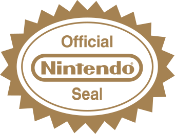
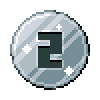

| # | Game | Year | Developer(s) |  | Episode | Time |
|---|---|---|---|---|---|---|
| {% if forloop.index == 1 %} {% elsif forloop.index == 2 %}  {% elsif forloop.index == 3 %} {% else %} {{ forloop.index }} {% endif %} |
{% if screenshot %}
{{ item.game }}
|
{{ wiki_data.year }} |
{% if dev %}
{% assign companies = dev | newline_to_br | split: " " %}
|
{% if licensed %} {% endif %} |
{% if item.ytid %}
 {{ item.ep | replace: ".", "-" }}
{% else %}
{{ item.ep | replace: ".", "-" }}
{% endif %} {{ item.ep | replace: ".", "-" }}
{% else %}
{{ item.ep | replace: ".", "-" }}
{% endif %}
|
{% if item.ytid and item.seconds %} {{ item.seconds | date: "%H:%M:%S"}} {% endif %} |